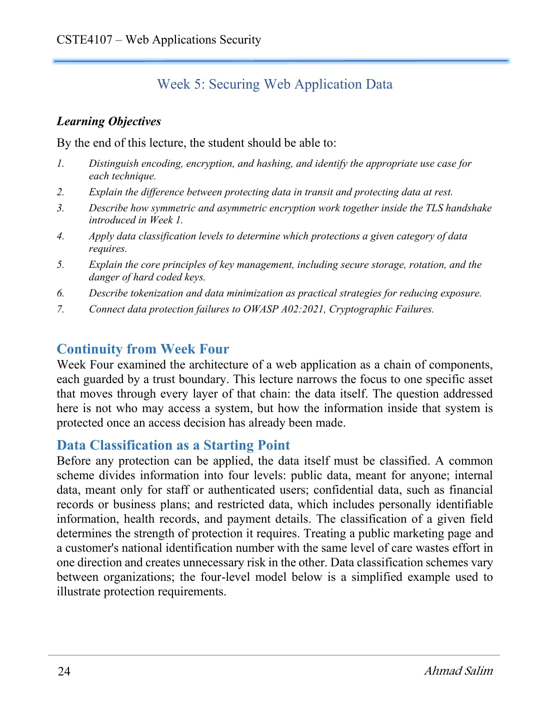
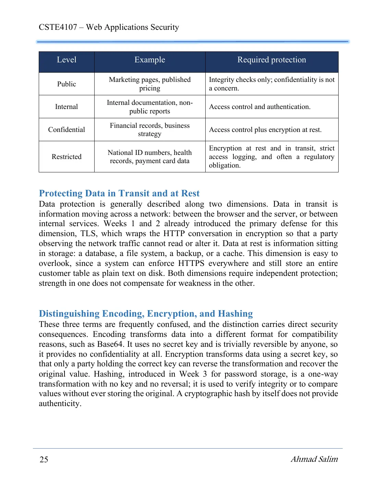
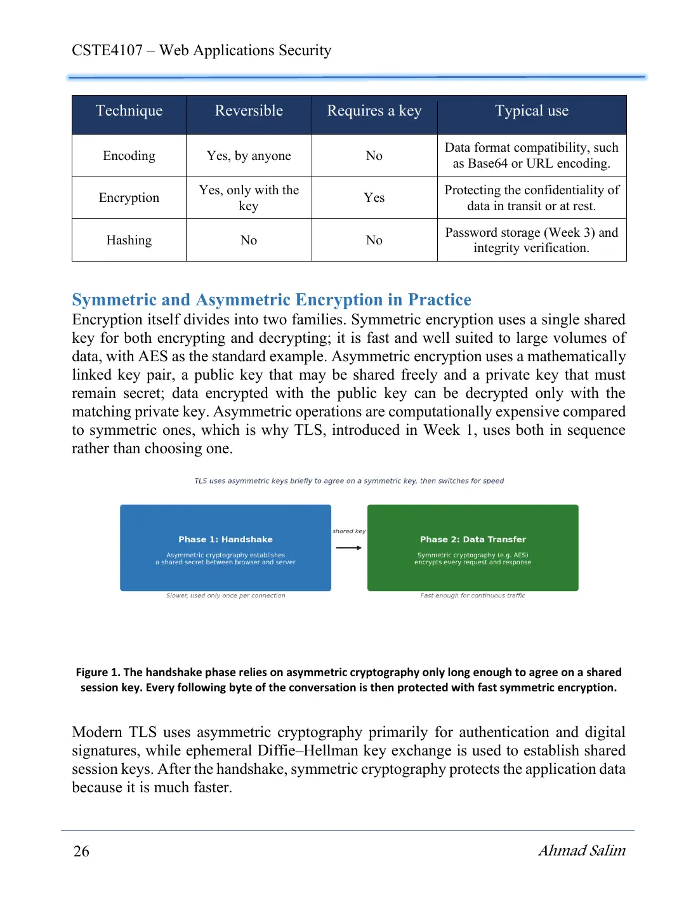
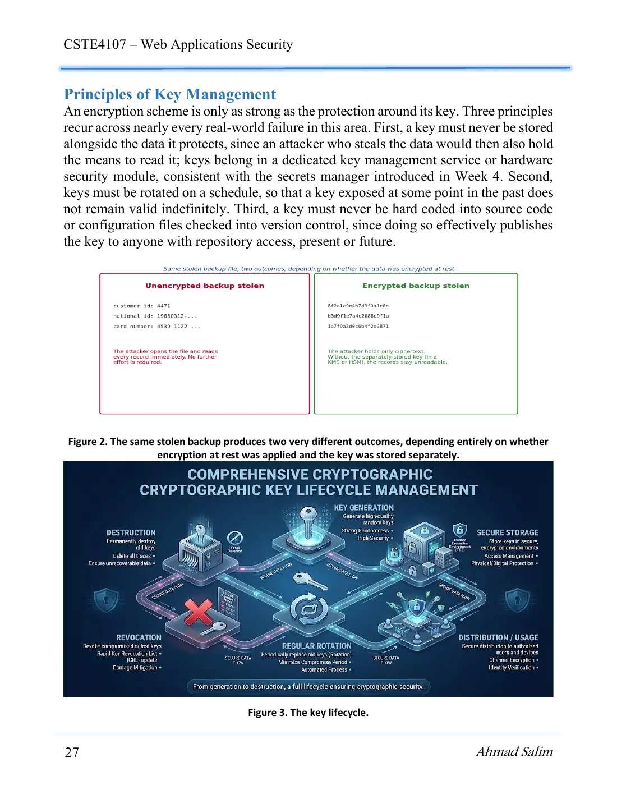
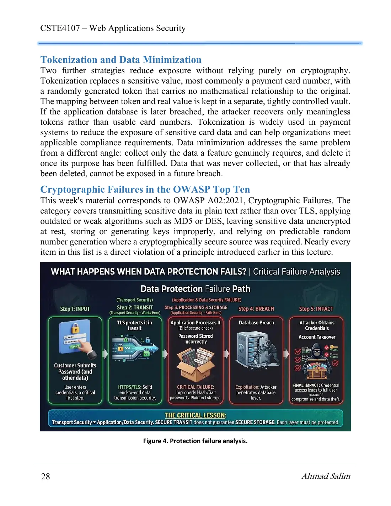

5 pages · 660 KB Open original PDF ↗
Σ Read the summary: التشفير والتهشير في حفظ الأسرار من التشهيرDefinitions, Q/ questions and comparison tables ✎ Take the mock exam for this lectureTimed, sectioned like the real exam, with model answers and marks ▶ Try it as an interactive labRun the commands in a simulator, check each step, then take the quiz



